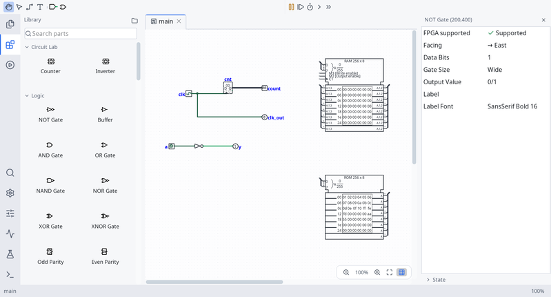

Logisim RevolutionDigital logic design and simulation |
Build a circuit with the searchable parts picker, wire it on the canvas, and inspect or change a component's settings in the right panel. Open several circuits in editor tabs; use the activity bar for the library, simulation, logs, and analysis.

Get started
- Build a first circuit with gates, pins, and wires.
- Explore the editor and its panels.
- Reuse a circuit as a subcircuit.
Reference
Circuit analysis · Memory · Timing and logging · Test vectors · Component library
Logisim Revolution is derived from Logisim-evolution, itself based on Carl Burch's Logisim. The existing reference chapters remain available; some examples and screenshots in those chapters describe the earlier interface.